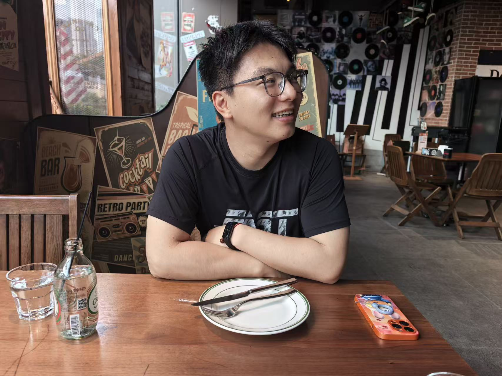
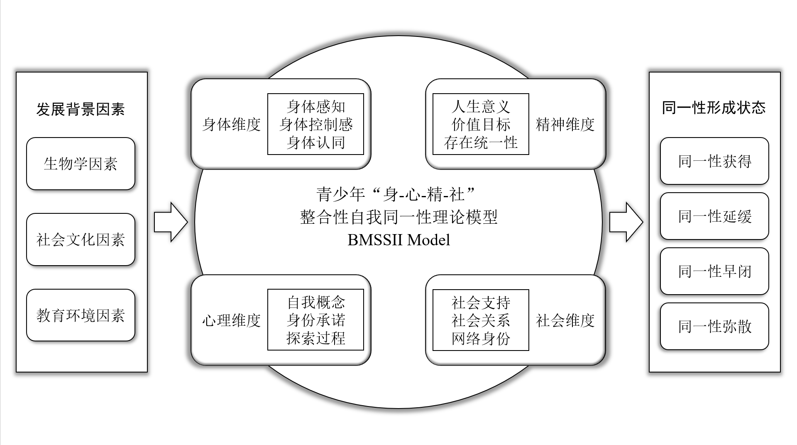
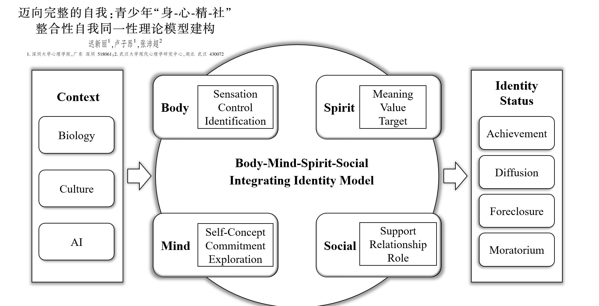
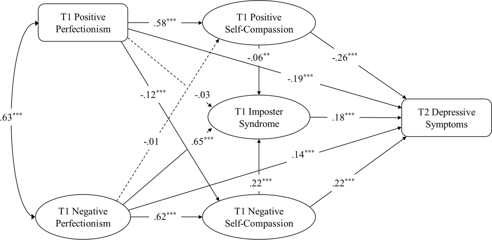
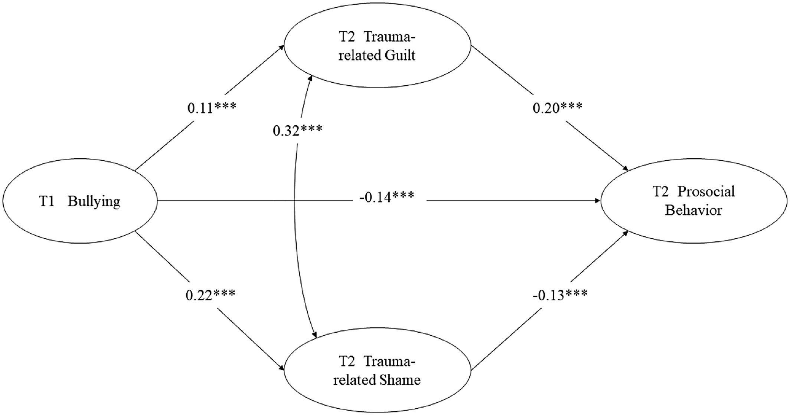
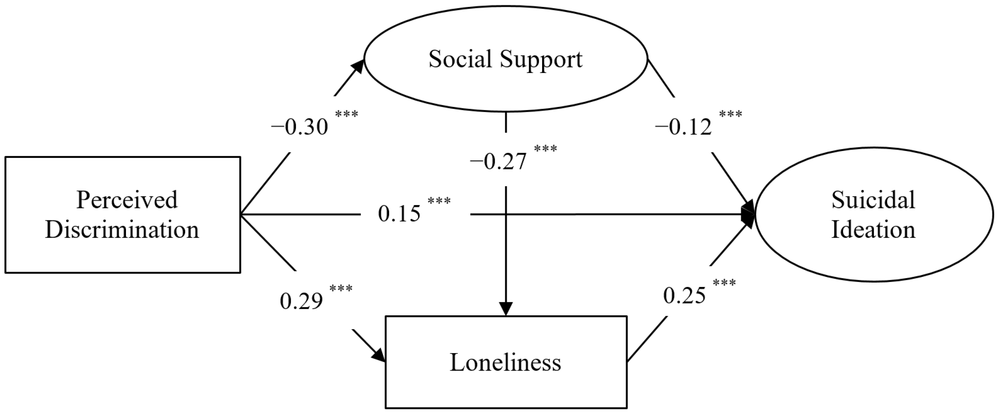

Psychology Researcher · Master's Student 心理学研究生
Exploring how children and adolescents develop, grow, and flourish — through developmental psychology, positive psychology, and evidence-based interventions. 通过发展心理学、积极心理学与循证干预，探索儿童与青少年如何积极发展、成长与繁荣。
Zi'ang Lu is a final-year master's student in psychology at Shenzhen University, supervised by Dr. Xinli Chi. His research centers on child and adolescent positive development, mental health, and evidence-based interventions.
He leads large-scale cohort studies examining youth well-being across behavioral, microbiome, and neuroimaging modalities. He has developed psychometric instruments for assessing preschool children's positive mental characters (PMCS-P) and conducts mindfulness-based interventions in early childhood settings. His work spans a large-scale network study of positive youth development encompassing over 67,000 Chinese adolescents.
His research bridges developmental psychology, positive psychology, and public health, with a commitment to producing research that informs real-world practice and policy. He is currently preparing for PhD applications, with interests in cultivating positive development, meaningful identity, resilience, and well-being in children and adolescents.
卢子昂，深圳大学心理学学术型硕士研究生，师从迟新丽教授。研究方向聚焦儿童青少年积极发展、心理健康与循证干预。
他主导了面向深圳职业早期青年的大规模多模态队列研究，涵盖行为实验、肠道菌群与脑成像数据。他开发了幼儿积极心理品质量表（PMCS-P），并在幼儿园场景中实施正念干预课程。其研究还涵盖超过67,000名中国青少年的积极发展大规模网络分析。
其研究工作连接发展心理学、积极心理学与公共卫生，致力于将研究成果转化为实践与政策参考。目前正在申请博士项目，关注幼儿及青少年积极发展、意义同一性、韧性与幸福感的培育。
Positive mental characters scale for preschoolers: development and validity.
Under review
Network structures and central components of positive youth development in Chinese adolescents: stage and gender differences.
Under review
The roles of posttraumatic stress symptoms and posttraumatic growth in the influence of shame and guilt on prosocial behavior.
Submitted
The co-occurrence of short video addiction and mental health among adolescents: a latent profile analysis and the protective role of social support.
Under review
Longitudinal relationships between anxiety and complex posttraumatic stress symptom in emerging adults with childhood maltreatment: comparing between- and within-person effects.
Submitted
Job burnout mediates the relationship between problematic short-video use and depressive symptoms in teachers: evidence from structural equation modeling and network analysis.
Submitted
迈向完整的自我：青少年"身-心-精-社"整合性自我同一性理论模型建构.
实用医院临床杂志, 23(03), 22–26.

图1. 青少年"身-心-精-社"整合性自我同一性理论模型（BMSSII）
Towards the complete self: construction of a theoretical model for the integrated self-identity of the "body-mind-spirit-social" identity model in adolescents [in Chinese].
Practical Journal of Clinical Medicine, 23(03), 22–26.

Figure 1. The Body-Mind-Spirit-Social Integrating Identity (BMSSII) Model
The relationship between perfectionism and depressive symptoms among Chinese college students: The mediating roles of self-compassion and impostor syndrome.
Current Psychology, 42(22), 18823–18831.
DOI: 10.1007/s12144-022-03036-8
Figure 1. Multiple indirect effects model
Longitudinal relationships between bullying and prosocial behavior: The mediating roles of trauma-related guilt and shame.
PsyCh Journal, 11(4), 492–499.
DOI: 10.1002/pchj.540
Figure 1. Conceptual model of longitudinal mediation effects
Relationships between perceived discrimination and suicidal ideation among impoverished Chinese college students: The mediating roles of social support and loneliness.
International Journal of Environmental Research and Public Health, 19(12), 7290. Open Access
DOI: 10.3390/ijerph19127290
Figure 1. Multiple indirect effects model
Vanke-Tsinghua Research Project (No. 20230065) · Positive Development Lab, Shenzhen University 清华大学万科自主科研项目（No. 20230065）· 深圳大学积极发展实验室
Led a 20-member research team to conduct large-scale, multi-modal data collection among early-career youth in Shenzhen.带领20人研究团队，面向深圳职业早期青年开展大规模多模态数据采集。
Master's Thesis Project · Under review 硕士论文项目 · 在投
Developed a comprehensive assessment tool measuring 6 virtues and 10 character traits across 34 items, validated with 2,559 parent-reported responses from 20+ kindergartens in Shenzhen.开发了涵盖6大美德、10项品格特质、34个条目的综合评估工具，基于深圳市20+所幼儿园的2,559份家长报告数据进行信效度检验。
Positive Development Lab · Shenzhen University 积极发展实验室 · 深圳大学
A large-scale study examining the 5Cs structure of positive youth development (PYD) across 67,296 Chinese adolescents, analyzing stage and gender differences through network analysis.一项覆盖67,296名中国青少年的大规模研究，通过网络分析探索积极发展5Cs结构及其发展阶段与性别差异。
Master's Thesis Project · Data collection ongoing 硕士论文项目 · 数据采集中
A waitlist-controlled trial implementing mindfulness-based curriculum in 3 kindergartens in Shenzhen, serving approximately 200 children aged 3–6.采用等待组对照设计，在深圳市3所幼儿园实施正念课程，服务近200名3-6岁幼儿。
Supervisor: Dr. Wenchao Wang · Beijing Normal University · 11/2020 – 06/2024 导师：王文超教授 · 北京师范大学 · 2020年11月 – 2024年6月
HK Security Bureau Youth Uniformed Group Leaders Forum香港保安局青少年制服团队领袖论坛
UNICEF China Country Office联合国儿童基金会驻华办事处
Smart Learning Institute, Beijing Normal University北京师范大学智慧学习研究院
1h 49min
42.195km · 5h 22min
2026 HK North District Invitational — 1st Place2026香港北区龙舟邀请赛 — 金杯第一名
Rating 1100 · chess.com等级分1100 · chess.com
Shenzhen, China中国深圳